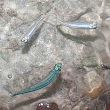
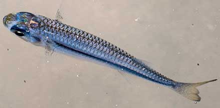
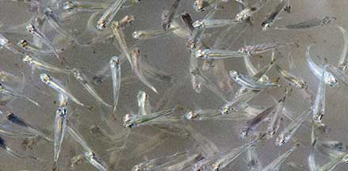
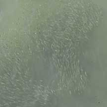
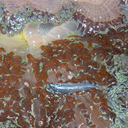
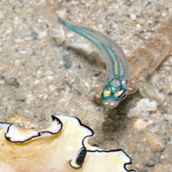
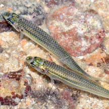

|
|
| fishes text index | photo index |
| Phylum Chordata > Subphylum Vertebrate > fishes |
| Silversides Family Atherinidae updated Sep 2020
Where seen? These flashy little fishes are commonly seen on many of our Southern shores, near living reefs. Usually in groups of small numbers, zipping about near the water surface, especially at night. Sometimes, large schools are seen from a boardwalk. In our mangroves, they may school in the hundreds and sometimes seen leaping out of the water to escape underwater prey. What are silversides? Silversides belong to Family Atherinidae. According to Fishbase: The family has 25 genera and 165 species in tropical and temperate waters. Most are marine although there are about 50 species confined to freshwater and some can move from the sea into freshwater. Features: 3-10cm long. These indeed silvery fishes are small, slender and streamlined, with large eyes and relatively large scales. They have small mouths that are upturned toward the water surface. They have two widely separated dorsal fins. They usually have a distinct darker band along the middle of the body from head to tail. Often seen in groups, sometimes in large schools. They are also called hardyheads. Tropical silversides (Atherinomorus duodecimalis): Those seen 3-6cm long, grows to about 10cm. Streamlined torpedo-shaped with large eyes. Colours silvery grey, bluish to bright blue. Usually with a narrow silvery line along the length of the side of the body. Sometimes confused with other small silvery fishes. More on how to tell apart small silvery fishes. |
 Pulau Semakau, Aug 14 |
 Tanah Merah, Dec 11 |
 Sometimes large schools are seen. Chek Jawa, Jan 10 |
 The school, seen from the boardwalk. Chek Jawa, Jan 10 |
| What do they eat? Many feed on zoo plankton or other tiny creatures that live in the water column (as opposed to on the sea bottom). Being so numerous, they are important prey for other larger fishes, other marine life and sea birds. |
 Other fishes prey on them. Sisters Island, Aug 09 |
 Carpet anemones are among their predators. Kusu Island, Jun 12 |
| Human uses: Only a few species of this Family are large enough to be valuable as human food. Smaller ones maybe used as bait or pet food. |
*Species are difficult to positively identify without close examination.
On this website, they are grouped by external features for convenience of display.
| Tropical silversides on Singapore shores |
On wildsingapore
flickr
|
| Other sightings on Singapore shores |
 Terumbu Semakau, Jul 14 Photo shared by Marcus Ng on flickr. |
 Pulau Biola, Jan 22 Photo shared by Loh Kok Sheng on facebook. |
| Family
Atherinidae recorded for Singapore from Wee Y.C. and Peter K. L. Ng. 1994. A First Look at Biodiversity in Singapore. *from WORMS
|
Links
References
|